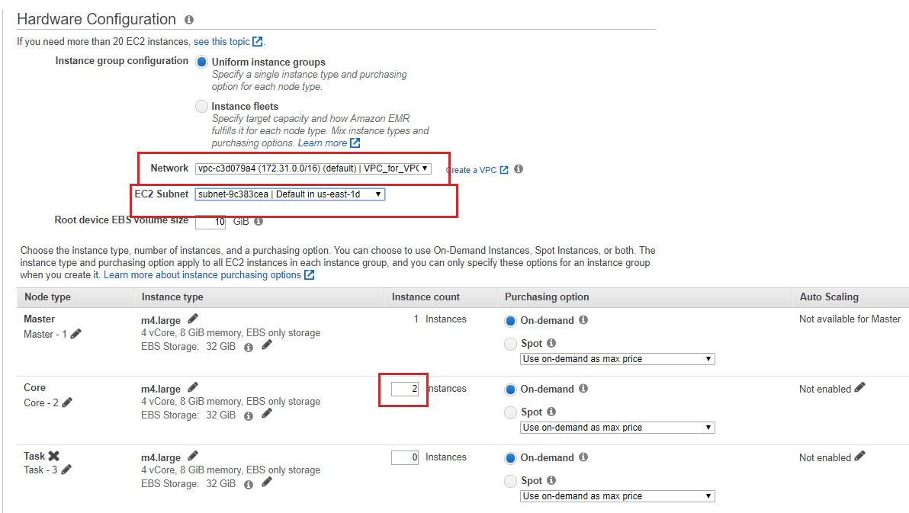
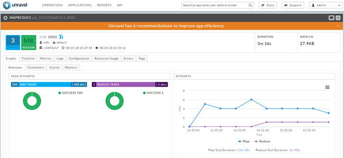

Amazon Elastic MapReduce (EMR)
This topic explains how to deploy Unravel on Amazon Elastic MapReduce (EMR).
Unravel deployment involves creating a new EC2 instance and setting up RDS (optionally), installing Unravel Server on the new EC2 instance, configuring Unravel Server, and connecting it to the EMR cluster you want to monitor.
A typical deployment and configuration takes less than an hour in most environments. In some environments, deployment takes longer due to the complexity of security/VPC settings, various permissions setup, and so on.
Prerequisites
Platform
Amazon EMR 5.17, 5.18, 5.19
Hardware
EC2 Instance Type:
Minimum: r4.2xlarge (61 GiB RAM)
Maximum: r4.8xlarge (244 GiB RAM)
Recommended: r4.4xlarge (122 GiB RAM)
Virtualization type: HVM
Root Device Type: EBS
EBS Volume Specifications:
Minimum: 100GiB.
In a PoC or evaluation, the minimum root disk space should be sufficient.
When monitoring more EMR clusters or lots of jobs, we recommend a 300-500GB Provisioned IOPS SSD (io1) volume with 3000 IOPS.
For production use, we recommend a 200GB Provisioned IOPS EBS and RDS volume.
The Baseline IOPS (3 IOPS per GiB with a minimum of 100 IOPS, burstable to 3000 IOPS) is sufficient for Unravel
(Optional) RDS Specifications:
DB instance class: db.r3.xlarge (4 vCPU, 30.5 GiB RAM)
Storage type: Provisioned IOPS (SSD)
Allocated storage: 200 GiB or above
Provisioned IOPS: 1000
Note
Unravel Server doesn't require a heavy resources, but it's best to check your AWS Service Limits as you proceed. For example, if you provision an Unravel EC2 instance from our CloudFormation template, check Virtual Private Cloud (Amazon VPC) Limits.
Software
Operating System: RedHat/CentOS 6.4 - 7.4
Recommended: CentOS 7.4 AMI. For example,
ami-02e98f78in us-east-1.
Access Permissions
The Unravel EC2 instance must have read permission on the S3 bucket used by EMR clusters.
You need an AWS account. You must be able to connect to AWS for the deployment process.
Create an S3 ReadAccess only IAM role and assign it to Unravel Server to READ the archive logs on the S3 bucket configured for the EMR cluster. In other words, create an IAM role that contains the policy that can only READ the specific S3 bucket used on the EMR cluster; then, create an EC2 instance profile and add the IAM role to it.
AWS Permissions and Access:
You must have permission to:
Create EC2 instances
Connect to EC2 instances
Install software on EC2 instances
Create security groups and IAM roles
Update IAM roles for the EMR cluster and the corresponding S3 storage
If you want to deploy Unravel for a new EMR cluster, you also need AWS permissions to create an EMR cluster and necessary S3 buckets, create and configure VPCs, etc.
Network
The following ports must be open on the Unravel EC2 instance. In addition, the Unravel EC2 instance must be able to access all ports on the EMR cluster.
In order to manage, monitor, and optimize the modern data applications running on your EMR cluster, Unravel needs data from the cluster as well as from apps running on the cluster. This data includes metrics, configuration information, and logs. Parts of this data is pushed to Unravel, and part of it is pulled by the daemons running on Unravel Server. In order for all data to be accessible, there must be both inbound and outbound access between Unravel Server (on the EC2 instance) and the EMR cluster.
The Unravel Server must be in the same region as the target EMR cluster(s) it will be monitoring. There are two possible scenarios:
Both the EMR cluster and the Unravel Server are created on the same VPC, same subnet; and the security group allows all traffic from the same subnet.
The EMR cluster is located on a different VPC than Unravel Server. In this case you must configure VPC peering, route table creation, and update the security policy; for instructions, see Setting Up VPC Peering (Optional).
The Unravel Server needs a TCP and UDP connection to the EMR master node. To implement this, do either of the following:
Create a security group that allows port 3000 and port 4043 from the EMR cluster node's IP address. Configure the security group on Unravel Server to allow TCP traffic on ports 3000 for EMR cluster nodes.
Put the member of security group used on the EMR cluster in this rule.
The Unravel Server and EMR cluster(s) must allow all outbound traffic.
EMR cluster nodes must allow all traffic from Unravel Server. If you can't allow Unravel Server to access all traffic, you must minimally allow Unravel Server to access cluster nodes' TCP port 8020, 50010, and 50020.
Port(s) | Direction | Description |
|---|---|---|
3000 | Both | Non- HTTPS traffic to and from Unravel UI |
4043 | In | UDP and TCP ingest traffic from the entire cluster to Unravel Server(s) |
Skill Set
These instructions assume you're proficient in:
Provisioning EC2 instances and RDS instances
Creating and configuring the required IAM roles, security groups, and so on
Understanding AWS networking concepts such as virtual private clouds (VPCs), subnets, and so on
Running Ansible scripts, basic Unix commands, and AWS CLI commands
You don't need to create any scripts or be familiar with any specific programming/scripting language. These instructions are self-contained, and require only basic knowledge of AWS. Expert-level knowledge of AWS is not required.
Architecture
In order to manage, monitor, and optimize the modern data applications running on your EMR cluster, Unravel Server needs data corresponding to the EMR cluster as well as about the modern data apps running on the cluster. This information includes metrics, configuration information, and logs. Some of this data is pushed to Unravel, and some is pulled by the daemons in Unravel Server. In order for this to work, you must allow both inbound and outbound traffic between Unravel Server (on the EC2 instance) and the EMR cluster. For details, see Planning Guidance.
Backing up Unravel amounts to RDS backup (if that is the chosen database) and backing up the state of the Unravel Server. For more information, see Operational Guidance.
 |
Planning Guidance
This section explains what settings you need to specify or give access to, and why.
Security Aspects Related to the Unravel Application Itself
Unravel UI and API are Unravel's user-facing components. For instructions on enabling TLS (SSL) for the Unravel UI, see Enabling TLS.
Risk Audit Mechanism
Unravel logs its actions on the same EC2 instance that hosts Unravel Server, in /usr/local/unravel/logs/unravel_ngui.log.
Costs
There are two components of the cost to the user in using Unravel:
Cost of AWS components:
Cost of the running Amazon EC2 instance that has the Unravel Server deployed on it + Cost of Amazon EBS storage + Cost of RDS (if applicable)
References:
Cost of Unravel license:
Unravel comes with a 30-day trial license. This means you can deploy and use Unravel for 30 days without any additional licenses. To obtain a license after the trial, contact us to discuss your needs and Unravel's terms and conditions.
Note
AWS cost allocation tags can be used to track your AWS costs on a detailed level. It is recommended to enable and set both types of cost allocation tags: AWS generated tags as well as user-defined tags. For details, see Using Cost Allocation Tags.
Provisioning and Configuring an Unravel EC2 Instance
This topic explains how to deploy Unravel Server on an EC2 instance.
Create an EC2 Instance
On your AWS console (https://console.aws.amazon.com/), go to the EC2 dashboard and click Launch Instance.
Select the following options:
Base OS: See the table above.
Instance type and size: See the table above.
EC2 instance's security group / IAM role: See the table above.
You might want to create an IAM role that contains the policy that only reads the specific S3 bucket used on EMR cluster; and then create and instance profile and add the IAM role to it.
Ports: See the table above.
Networking:
The EC2 instance must be in same region with the target EMR clusters which Unravel EC2 node will be monitoring.
Warning
Security reminder: Don't make Unravel UI accessible on the public Internet.
Security groups or policies:
Create an S3 ReadAccess only IAM role and assign it to Unravel EC2 node to read the archive logs on the S3 bucket configured for the EMR cluster.
Create TCP and UDP connections from the EMR master node to Unravel EC2 node.
Create a security group that allows port 3000 and port 4043 from EMR cluster nodes' IP address, and put the member of the security group used on EMR cluster in this rule.
A sample security group used for Unravel EC2 node.
Inbound Rule Type
Protocol
Port Range
Source
All traffic
All
All
Security group ID of this group or subnet IP block.
For example, 10.10.0.0/16
SSH
TCP
22
0.0.0.0/0 or trusted public IP for SSH access
Custom TCP Rule
TCP
3000
Security group ID used on the EMR cluster or subnet IP block (if IP block belongs to a different VPC). Required for VPC peering connection.
Custom TCP Rule
TCP
4043
Security group ID used on the EMR cluster or subnet IP block (if IP block belongs to a different VPC). Required for VPC peering connection.
Outbound Rule Type
Protocol
Port Range
Source
All traffic
All
All
0.0.0.0/0
Note
The Unravel EC2 node should have all TCP access to the EMR cluster (master or slave) nodes. You can grant access by inserting a security policy into both security groups of the EMR master and slave with all TCP, all port range. The source is the security group ID of the Unravel VM. For an example, see the screenshot below.

If it isn't possible to allow the Unravel EC2 access to all traffic to EMR cluster, you must minimally allow it to access cluster nodes' TCP ports 8020, 50010 and 50020.
Configure the EC2 Instance at First Login
Disable
selinux.sudo setenforce Permissive
Edit
/etc/selinux/configto make sure the setting persists after reboot and make sureSELINUX=permissive.sudo vi /etc/selinux/config
Install
libaio.x86_64,lzop.x86_64, and ntp.x86_64.sudo yum install -y libaio.x86_64 sudo yum install -y lzop.x86_64 sudo yum install -y ntp.x86_64
Start ntpd and check the system time.
sudo service ntpd start sudo ntpq -p
Create a new user named
hadoop.sudo useradd hadoop
(Optional) Install MySQL
Complete the [Before Installing Unravel RPM] steps in Install and Configure MySQL for Unravel.
Install the Unravel RPM on the EC2 Instance
Download the Unravel Server RPM.
Install the Unravel Server RPM.
The precise filename can vary, depending on how it was fetched or copied.
sudo rpm -U unravel-4.5.0.*-EMR-latest.rpm
Run the
await_fixups.shscript to ensure background processing is finished before proceeding.In a routine upgrade, it is okay to start all Unravel daemons, but do not stop or restart them until the
await_fixups.shprintsDone. This may take a few minutes./usr/local/unravel/install_bin/await_fixups.sh sudo /usr/local/unravel/install_bin/switch_to_user.sh hadoop hadoop
Append the following line to
/usr/local/unravel/etc/unravel.properties:com.unraveldata.onprem=false
For monitoring EMR Spark service, add the following properties to
unravel.properties:com.unraveldata.spark.live.pipeline.enabled=true com.unraveldata.spark.hadoopFsMulti.useFilteredFiles=true com.unraveldata.spark.events.enableCaching=true
The installation creates the following items:
Virtualization type: HVM
User
unravel(if it doesn't exist already).Initial internal database and other durable states in
/srv/unravel/for larger storage.Virtualization type: HVM
/etc/init.d/unravel_*scripts for controlling services, and/etc/init.d/unravel_all.shwhich you can use to manually stop, start, and get status of all daemons in proper order.
If You Installed MySQL, Configure It
Complete the [After Installing Unravel RPM] steps in Install and Configure MySQL for Unravel.
Log into Unravel UI
Start Unravel daemons.
sudo /etc/init.d/unravel_all.sh start
Create an SSH tunnel from your workstation to the Unravel EC2 instance.
ssh -i ssh_key.pem centos@
unravel-host-ip-L 3000:127.0.0.1:3000Using a supported web browser, navigate to
http://127.0.0.1:3000Log into the Unravel UI with username
adminand passwordunraveldata.
Congratulations! Unravel Server is up and running. Proceed to connect to your existing or new EMR cluster.
Connecting the Unravel EC2 Instance to a New or Existing EMR Cluster
This topic explains how to set up and configure your EMR cluster so the Unravel EC2 instance can begin monitoring your jobs running on the cluster.
Assumptions
The Unravel EC2 instance is created.
The Unravel daemon is running.
The security group on the Unravel EC2 instance allows traffic via TCP ports 3000 for EMR cluster nodes.
The Unravel EC2 instance and EMR cluster(s) allow all outbound traffic.
EMR cluster nodes allow all traffic from the Unravel node. Both EMR cluster and Unravel node are created in same VPC, same subnet; and the security group allows all traffic from the same subnet.
For existing EMR cluster connection located on a different VPC, you must configure VPC peering, route table creation, and security policy update. For details, see Step 4: Set Up VPC Peering for Unravel EC2 Node (Optional).
Network ACL on VPC allows all traffic.
Connect the Unravel EC2 Instance to a New EMR Cluster
To connect the Unravel EC2 instance to a new EMR cluster, follow the steps below to run the Unravel EMR bootstrap script on all nodes in the cluster. The bootstrap script does the following:
On the master node:
On Hive clusters, it updates
/etc/hive/conf/hive-site.xml.On Spark clusters, it updates
/etc/spark/conf/spark-defaults.conf.It updates
/etc/hadoop/conf/mapred-site.xml.It updates
/etc/hadoop/conf/yarn-site.xml.If Tez is installed, it updates
/etc/tez/conf/tez-site.xml.It installs and starts the
unravel_es daemonin/usr/local/unravel_es.It installs the Spark and MapReduce sensors in
/usr/local/unravel-agent.It installs the Hive Hook sensor in
/usr/lib/hive/lib/.
On all other nodes:
It installs the Spark and MapReduce sensors in
/usr/local/unravel-agent.It installs Hive sensors in
/usr/lib/hive/lib.
Download the Unravel EMR bootstrap script, https://s3.amazonaws.com/unraveldatarepo/unravel_emr_bootstrap.py.
curl https://s3.amazonaws.com/unraveldatarepo/unravel_emr_bootstrap.py -o /tmp/unravel_emr_bootstrap.py
Upload the Unravel EMR bootstrap script
unravel_emr_bootstrap.pyto an S3 bucket.Write access to the S3 bucket is required in order to upload the bootstrap script.
The AWS account used to create the EMR cluster must at least have read access to the uploaded bootstrap script in order to carry out bootstrap actions.
To upload the bootstrap script to the default EMR logging bucket,
s3://aws-logs-, execute the following command:account_number-region/elasticmapreduceaws s3 cp unravel_emr_bootstrap.py s3://aws-logs-
account_number-region/elasticmapreduceIn the AWS console, select the EMR service and click Create cluster.
In the Create Cluster - Quick Options screen, click Go to advanced options.

Select Step 1: Software and Steps. Choose EMR release emr-5.14.0 for the Release version and select all applications that fit your needs. Click Next.

Additionally, for transient EMR clusters: During creation, run the Unravel JAR
s3://unraveldatarepo/unravel-bootstrap-step.jaras the first step. This JAR waits for theunravel_esdaemon to be up and running.To run this JAR:
Scroll down to Add steps, select step type Custom JAR, and click Configure.
Enter these two parameters:
Parameter 1: Maximum number of minutes for which the step will wait for unravel_esto come up. Default: 4.Parameter 2: Length of each interval in seconds after which the step will check for the status of unravel_es. Default: 2.

This Unravel JAR creates a log file in
/tmp/unravel/unravel_step.logon the master node.Select Step 2: Hardware and edit the hardware configuration for the cluster as follows:
Set Network and EC2 Subnet to the VPC and subnet used for EMR. The selected subnet's associated security group must have access to the Unravel EC2 node.
Note
If you created the Unravel EC2 node from our CloudFormation template, then a new VPC was generated, named Unravel_VPC. This VPC comes with one configured subnet, and by default has a CIDR / network address block of 10.10.0.0/16 (but you might have changed this during stack creation).
If you created the Unravel EC2 node from our Amazon Machine Image (AMI), you must create the EMR cluster on the same VPC and same subnet as the Unravel EC2 node.
Modify the instance type and enter the desired instance count for core (slave) node(s).
Click Next.

Select Step 3: General Cluster Settings. Fill in the Cluster name and choose the S3 folder (bucket) for your Logging (log archive). In the Add bootstrap action pull-down select Custom action. Click Configure and add.

Tip
For details on how to set up your EMR cluster, see https://docs.aws.amazon.com/emr/latest/ManagementGuide/emr-gs-launch-sample-cluster.html.
In the Add Bootstrap Action pop-up, enter the Script location (from step 2) and Optional arguments. Click Add.

Sample script location:
s3://aws-logs-account_number-region/elasticmapreduceOptional arguments (mandatory here):
--unravel-serverunravel-ec2-ip--bootstrapOptional arguments:
--metrics-factorUse this parameter to change the interval at which sensor data is pushed from sensors running on EMR cluster nodes to Unravel Server. The interval is in units of 5 seconds. In other words, a value of 1 means 5 seconds, 2 means 10 seconds, and so on. Default: 1intervalIn the Bootstrap Actions click Next to continue and return to Advanced Options screen.
Select Step 4: Security and edit the hardware configuration for the cluster as follows:
Choose the EC2 key pair.
Select the EC2 security groups. AWS EMR service automatically applies additional rules that are required for EMR nodes.
In this example, the security group picked for both Master and Core & Task nodes have rules allowing all traffic access from the Unravel EC2 node.
Warning
You must choose the security group that includes the Unravel EC2 instance, otherwise bootstrapping will fail.
Click Create cluster.
If everything was entered correctly, your new EMR cluster should finish the bootstrap process and be in the Waiting state.
Once your new EMR cluster is up and running, you can run some jobs and log into the Unravel EC2 node's web UI to see the metrics collected by the Unravel node.
Connect the Unravel EC2 Instance to an Existing EMR Cluster
To connect the Unravel EC2 instance to an existing EMR cluster, follow the steps below to run the Unravel EMR Ansible playbook either on the EMR master node or on your Mac/Linux workstation.
Warning
Whenever you upgrade Unravel Server, repeat the steps below to upgrade Unravel Sensors as well.
Save the private key to access all the EMR nodes somewhere in the master node and change the key's permissions to read-only (chmod 400 ).key
Download
unravel-emr-ansible.zip:curl https://s3.amazonaws.com/unraveldatarepo/unravel-emr-ansible.zip --output unravel-emr-ansible.zip % Total % Received % Xferd Average Speed Time Time Time Current Dload Upload Total Spent Left Speed 100 11708 100 11708 0 0 66541 0 --:--:-- --:--:-- --:--:-- 66902Unzip
unravel-emr-ansible.zip:unzip unravel-emr-ansible.zip Archive: unravel-emr-ansible.zip inflating: unravel-emr-ansible/README.md inflating: unravel-emr-ansible/emr_ansible_inventory inflating: unravel-emr-ansible/emr_ansible_playbook.yaml inflating: unravel-emr-ansible/prepare_inventory.py inflating: unravel-emr-ansible/unravel_emr_bootstrap.py
Run
prepare_inventory.py:Enter the following values either interactively at the prompts or through their command line options:
--ssh-key: The full pathname of the SSH private keypath--unravel-host: The Unravel EC2 host's internal IP address.hostname--cluster-name: The EMR cluster name as you want it to display in Unravel UI.displayname
For example,
python prepare_inventory.py Please Enter Unravel host IP: 172.31.62.27 Please Enter ssh key path: /home/hadoop/id_rsa Ansible Inventory updated
Install Ansible on the EMR master node:
sudo pip install ansible
(Optional) Determine what directory Ansible was installed in, and add that directory to the $PATH variable in
~/.bashrc, if it isn't there already.which ansible /usr/local/bin/ansible
In
~/.bashrc, update this line:export PATH=/usr/local/bin/:$PATH
Run the Unravel Ansible playbook:
$ cd unravel-emr-ansible $ ANSIBLE_HOST_KEY_CHECKING=false $ ansible-playbook -i emr_ansible_inventory emr_ansible_playbook.yaml PLAY [nodes] ******************************************************************* TASK [Gathering Facts] ********************************************************* ok: [172.31.109.7] ok: [172.31.109.251] ok: [172.31.97.203] TASK [Run emr bootstrap script] ************************************************ changed: [172.31.109.7] changed: [172.31.109.251] changed: [172.31.97.203] TASK [Check Unravel sensor version] ******************************************** changed: [172.31.109.7] changed: [172.31.109.251] changed: [172.31.97.203] TASK [Print sensor version] **************************************************** ok: [172.31.109.7] => { "msg": "Unravel Version: 4.4.3.0b0005" } ok: [172.31.109.251] => { "msg": "Unravel Version: 4.4.3.0b0005" } ok: [172.31.97.203] => { "msg": "Unravel Version: 4.4.3.0b0005" } PLAY RECAP ********************************************************************* 172.31.109.251 : ok=4 changed=2 unreachable=0 failed=0 172.31.109.7 : ok=4 changed=2 unreachable=0 failed=0 172.31.97.203 : ok=4 changed=2 unreachable=0 failed=0
Save the private key to access all the EMR nodes somewhere in the master node and change the key's permissions to read-only (chmod 400 ).key
Make sure AWS CLI has permission to list EMR clusters:
aws emr list-instances --cluster-id
cluster idDownload
unravel-emr-ansible.zip:wget https://s3.amazonaws.com/unraveldatarepo/unravel-emr-ansible.zip
Unzip
unravel-emr-ansible.zip:unzip unravel-emr-ansible.zip Archive: unravel-emr-ansible.zip inflating: unravel-emr-ansible/README.md inflating: unravel-emr-ansible/emr_ansible_inventory inflating: unravel-emr-ansible/emr_ansible_playbook.yaml inflating: unravel-emr-ansible/prepare_inventory.py inflating: unravel-emr-ansible/unravel_emr_bootstrap.py
Run
prepare_inventory.py:Enter the following values either interactively at the prompts or through their command line options:
--cluster-id: Cluster ID. Optional on EMR master, required if run outside of EMR cluster.string--region: AWS region. Optional on EMR master, required if run outside of EMR master nodestring--inventory: Directory containing the Ansible inventory file, emr_ansible_inventory. Default is same directory as the playbook.path--ssh-key: The full pathname of the SSH private keypath--ssh-user: SSH username with sudo privilege; default isstringhadoop--unravel-host: The Unravel EC2 host's internal IP address.hostname--cluster-name: The EMR cluster name as you want it to display in Unravel UI.displayname--use-public: Use public IP address instead of private IP address in Ansible inventory. Include this option if you need to connect to the EMR cluster solely through its public IP address.
For example,
python prepare_inventory.py --use-public Please Enter Unravel host IP: 172.31.62.27 Please Enter ssh key path: /home/hadoop/id_rsa Ansible Inventory updated
Install Ansible:
sudo pip install ansible
Run the Unravel Ansible playbook:
$ cd unravel-emr-ansible $ ANSIBLE_HOST_KEY_CHECKING=false $ ansible-playbook -i emr_ansible_inventory emr_ansible_playbook.yaml PLAY [nodes] ******************************************************************* TASK [Gathering Facts] ********************************************************* ok: [18.61.10.17] ok: [18.61.10.21] ok: [18.61.10.20] TASK [Run emr bootstrap script] ************************************************ changed: [18.61.10.17] changed: [18.61.10.21] changed: [18.61.10.20] TASK [Check Unravel sensor version] ******************************************** changed: [18.61.10.17] changed: [18.61.10.21] changed: [18.61.10.20] TASK [Print sensor version] **************************************************** ok: [18.61.10.17] => { "msg": "Unravel Version: 4.4.3.0b0005" } ok: [18.61.10.21] => { "msg": "Unravel Version: 4.4.3.0b0005" } ok: [18.61.10.20] => { "msg": "Unravel Version: 4.4.3.0b0005" } PLAY RECAP ********************************************************************* 18.61.10.21 : ok=4 changed=2 unreachable=0 failed=0 18.61.10.17 : ok=4 changed=2 unreachable=0 failed=0 18.61.10.20 : ok=4 changed=2 unreachable=0 failed=0
Next Steps
For additional configuration and instrumentation options, see Next Steps.
Sanity Check
After you connect the Unravel EC2 instance to your EMR cluster, run some jobs on the EMR cluster and monitor the information displayed in Unravel UI (http://unravel_ec2_node_public_IP:3000).
Troubleshooting Common Issues
Check Ansible playbook logs in /tmp/unravel/unravel_sensor_ansible.log.
If the EMR cluster is created in a different VPC, configure VPC peering.
In the upper right corner of Unravel UI, click the pull-down menu, and select Manage.
Wait for the page to fully load.
Select the Diagnostics tab.
Click Send Diagnostics to Unravel Support.
This sends an email message with a diagnostics report to Unravel Support and also to the users listed in the com.unraveldata.login.admins property.
If you don't have access to push the bundle through the Web UI:
On the Unravel Host bundle the diagnostic information.
/usr/local/unravel/install_bin/diag_dump.sh
Email the bundle to the Unravel support team.
If you used our CloudFormation template to create your Unravel EC2 instance, it's protected by ASG, which sets the target/maximum number of instances at 1. In the rare scenario of this instance failing, ASG will recreate it with the same configuration, and restore its prior history from a backup saved in the S3 bucket. In this case, your existing EMR clusters just need to be reconnected to the newly created Unravel EC2 node as described in Step 2: Connect the Unravel EC2 Instance to a New/Existing EMR Cluster.
If you're done with the Unravel EC2 instance, you can delete it as follows.
From your EC2 console (
https://console.aws.amazon.com/cloudformation/), select the EC2 instance you want to delete.In the Actions pull-down menu, select Delete Stack.
Click Yes, Delete.
Monitor the Status column to make sure the deletion is complete. If deletion fails, disable auto scaling via the EC2 console (menu on left), otherwise Amazon will keep re-spawning the EC2 instance.
You may see this common error:
org.apache.oozie.action.ActionExecutorException: JA010: Property [fs.default.name] not allowed in action [job-xml] configuration
The reason behind can be older version of configuration where some properties being deprecated. The straightforward solution is to comment out the <job-xml> element in the workflow.xml file.
Adjust the time horizon settings.
In Manage | Core | Retention | TIME SERIES RETENTION DAYS, adjust the number of days to retain data. This corresponds to the com.unraveldata.retention.max.days property.
In
/usr/local/unravel/etc/unravel.propertiesadjust com.unraveldata.history.maxSize.weeks.For example, to set the time horizon to 2 years with recent data showing the maximum amount minus 2 weeks:
com.unraveldata.history.maxSize.weeks=104
Restart Unravel services.
sudo /etc/init.d/unravel_all.sh restart
Setting Up Amazon RDS (Optional)
Unravel's default installation uses a bundled database for part of its storage. For better performance and ease of management, we recommend replacing the bundled database with an Amazon RDS instance.
Create an RDS Security Group, Subnet Group, and Parameter Group
Create an RDS security group on the VPC of Unravel Server and allow access from Unravel Server security group.
Create a new database subnet group.
A new database subnet group is required for "multiple availability zone" (multi-AZ) deployment. The VPC should at least contains two subnets in at least two availability zones in a given region, in the same VPC. For more information, see AWS documentation.

Create a new database parameter group , based on mysql 5.5, with custom MySQL settings.

Custom Database Parameters key_buffer_size = 268435456 max_allowed_packet = 33554432 table_open_cache = 256 read_buffer_size = 262144 read_rnd_buffer_size = 4194304 max_connect_errors=2000000000 net-read-timeout = 300 net-write-timeout = 600 open_files_limit=9000 innodb_open_files=9000 character_set_server=utf8 collation_server = utf8_unicode_ci innodb_autoextend_increment=100 innodb_additional_mem_pool_size = 20971520 innodb_log_file_size = 134217728 innodb_log_buffer_size = 33554432 innodb_flush_log_at_trx_commit = 2 innodb_lock_wait_timeout = 50
Database Options Settings Database name: unravel_mysql_prod Port: 3306 DB parameter group: unravel
Create an Amazon RDS Instance
In the Amazon RDS portal, click Create database.

Select MySQL and click Next.
Select Production - MySQL.

Change the following properties, and leave all others with default values.
License model: generic-public-license
DB engine version: 5.5.46
DB instance class: db.r3.xlarge (vCPU, 30.5 GiB RAM)
Multi-AZ deployment: Create replica in different zone
Storage type: Provisioned IOPS (SSD)
Allocated storage: 500GB (or more depending on number of jobs and clusters the unravel node will monitor)
Provisioned IOPS: 1000

Specify the database instance ID, username, and password.
DB Instance identifier:
unravel_mysql_prodMaster username:
unravelMaster password: Change_Password

Click Next.
In the Advanced Settings page change the following settings.
You can leave all other settings with default values or specify values suitable to your requirements.
Network & Security Settings
Virtual Private Cloud: Select the VPC that contains minimally two subsets and on the same region that you plan to deploy Unravel and the EMR cluster.
Subnet group: Select the new database subnet group you created, named
unravel.Public accessibility: No
Availability zone : No Preference
VPC security group: Select the new VPC security group you created.

Click Create database.
You should see the following message.

Connect Unravel to the RDS Instance
By default, the security group created for the unravel RDS has no network access granted on port 3306 on the subnet connected. You must modify the security group applied on Unravel RDS.
In the Amazon RDS dashboard, locate the MySQL database endpoint.

Look for the security group used for the Unravel RDS instance.

Modify the inbound rule of the security group by adding a new rule to allow connections from either:
The Unravel EC2 instance's security group.
The subnet IP block in which the Unravel EC2 instance located.
Either the security group or IP block works, provided the RDS instance is located on the same region as the VPC.

On Unravel Server, verify the MySQL connection.
For example,
/usr/local/unravel/mysql/bin/mysql -h unravelmysqlprod.csfw1hkmlpgh.us-east-1.rds.amazonaws.com -u unravel -p

Verify that the database
unravel_mysql_prodhas been created; if not create it.CREATE DATABASE IF NOT EXISTS unravel_mysql_prod;
Create a Schema for the RDS Instance
Stop Unravel Server.
sudo /etc/init.d/unravel_all.sh stop
Set or add the following properties in
/usr/local/unravel/etc/unravel.propertiesso that Unravel Server knows about the database.If the property isn't found, add it. Use the actual values you set in the steps above.
You can use a hostname; but to avoid DNS lookups use an IP address.
The database password can be encrypted.
unravel.jdbc.username=unravel unravel.jdbc.password=
unraveldataunravel.jdbc.url=jdbc:mysql://unravelmysqlprod.csfw1hkmlpgh.us-east-1.rds.amazonaws.com:3306/unravel_mysql_prodEnsure the schema is up to date using the schema upgrade utility provided by Unravel Server. The script step connects to the database and applies schema deltas, in order, until the schema is up to date. The success or failure of the update is noted.
sudo /usr/local/unravel/dbin/db_schema_upgrade.sh
Note
If table creation privilege is not granted because an internal DBA support group provides the external database, request that they apply the schemas in
/usr/local/unravel/sql/mysql/in numerical order. The schema deltas assume the database name is already picked with a 'use' statement. The schema_migrations table keeps track of what schemas have been applied.Create the default user
adminwith the SQL statement emitted by/usr/local/unravel/install_bin/db_initial_inserts.sh | /usr/local/unravel/install_bin/db_access.sh
Start Unravel Server
Disable the bundled database on Unravel Server. Only one of these commands is needed, depending on your exact version of Unravel. The unnecessary command produces an error which you can ignore.
sudo chkconfig unravel_db off sudo chkconfig unravel_pg off
Start Unravel Server.
sudo /etc/init.d/unravel_all.sh start
Setting Up VPC Peering (Optional)
Note
Follow these steps only if you have an Amazon EMR cluster located in a different VPC than the Unravel EC2 instance.
This topic explains how to resolve connectivity issues when you have an Amazon EMR cluster located in a different VPC than your Unravel EC2 instance or your Unravel EC2 instance connects to an RDS instance created on a different VPC in the same region.
The VPC where Unravel EC2 located is in the same region as the EMR cluster.
The subnet used by Unravel EC2 does not overlap the IP block range of the subnet used in the EMR cluster.
Network ACLs on both the VPC for Unravel EC2 and the EMR cluster are the default and allow all traffic. The security group is the only security enforcement on network access.
The examples below show both the Unravel EC2 instance and the EMR cluster in the us-east-1 region but configured with different VPC and subnet. There is no network access allowed between Unravel EC2 and EMR cluster by default.
Resources | Internal IP Address | Subnet ID | Subnet IP Block | VPC ID (Name) | IP block in VPC | Security Group ID (Name) |
|---|---|---|---|---|---|---|
Unravel EC2 node | 10.10.0.7 | subnet-03b82c56b2c26dbd1 | 10.10.0.0/24 | vpc-0b0e17b01c4a3b54a (Unravel_VPC) | 10.10.0.0/16 | sg-0e0a03084398287c9 (Unravel-EC2_SG) |
EMR Cluster Master node | 10.11.0.53 | subnet-0294cc17a42a9acfd | 10.11.0.0/24 | vpc-c3d079a4 (VPC_for_VPC Peering) | 10.11.0.0/16 | sg-0a73c3aea9340ae49 (EMR_VPC_SG) |
EMR Cluster Core nodes | 10.11.0.76 10.11.0.130 | subnet-0294cc17a42a9acfd | 10.11.0.0/24 | vpc-c3d079a4 (VPC_for_VPC Peering) | 10.11.0.0/16 | sg-0a73c3aea9340ae49 (EMR_VPC_SG) |
Create VPC Peering in VPC Dashboard
From the AWS console | VPC services | Peering Connections, click Create Peering Connection.
Enter the name tag.
For example,
EMR_to_Unravel.In the VPC (Requester) field, select the VPC of the EMR cluster.
In the VPC (Accepter) field, select the VPC of Unravel Server.
Click Create Peering Connection.

A success message should appear in the screen.
Click OK.

Accept the VPC Peering Request
In the VPC Dashboard, the new VPC peering connection has the status Pending Acceptance.
Select this connection, click Action, and select Accept Request.

Click Yes Accept in the prompt screen. You will see a message regarding "Modify my route tables". Click Close.

Create Routes Between Peered VPC
To create the routes between peered VPCs (Unravel Server on Unravel_VPC and the EMR cluster on Test_EMR_VPC):
Go to VPC Dashboard | Route Tables .
After locating each route table, click Edit | Add another route.
Find the Unravel_VPC route table.
In the Destination field, enter the IP block of the EMR VPC.
For example,
10.11.0.0/16
In the Target field , select the VPC peer connection ID.
For example, pcx-0a57a978ef9a525e2.
Click Save .
Find the Test_EMR_VPC route table.
Set the Destination to the IP block of Unravel_VPC.
For example,
10.10.0.0/16.In the Target field, select the VPC peer connection ID.
For example, pcx-0a57a978ef9a525e2.
Click Save.
In the Target field, select the connection ID.
For example, pcx-0a57a978ef9a525e2.
Click Save.
Update Security Groups
Go to VPC Dashboard | Security Group.
After locating each security group: Click Add another rule.
Set Type to inbound ALL traffic and Protocol to ALL.
Locate the security group used on Unravel EC2 node. Enter the EMR VPC IP block, e.g., 10.11.0.0/16 in the Source field. Click Save.

Locate the security group used on EMR cluster node and enter the Unravel VPC IP block.
For example,
10.10.0.0/16.Click Save.
Verify Connection Between Unravel EC2 Node and EMR Master Node
Open SSH sessions to both Unravel EC2 nodeand EMR master node.
Since the above example allows all traffic from both VPC IP blocks, you should be able to ping the IP address of EMR master node from Unravel Server.
On Unravel EC2 node, telnet to EMR master node port 8082 (namenode port)
On the EMR master node, telnet to Unravel EC2 node port 3000 and port 4043.

If telnet port tests are positive, the VPC peering connection is setup correctly. If not, troubleshoot the configuration on network ACL, security groups, and route tables used on both VPCs. For more information, see unsupported VPC peering configurations.
Adding Instrumentation for a New Node
When a new node is added to your EMR cluster and that node was bootstrapped during creation, its bootstrap script runs on it automatically. To make sure that Unravel can communicate with the new node, do the following:
Download the Unravel EMR bootstrap script from
https://s3.amazonaws.com/unraveldatarepo/unravel_emr_bootstrap.pyto the new node.sudo curl https://s3.amazonaws.com/unraveldatarepo/unravel_emr_bootstrap.py -o /tmp/unravel_emr_bootstrap.py
Manually run the bootstrap script on the new EMR node by providing the Unravel Server's private IP address and the EMR cluster ID.
sudo python /tmp/unravel_emr_bootstrap.py --unravel-server
unravel-host-private-ip--cluster-idemr-cluster-id
Testing and Troubleshooting
This is an excerpt of the User Guide. For more details, see the full document.
Testing the Deployment
Connect to the Unravel UI via an SSH tunnel.
Create sn SSH tunnel to port 3000 on the Unravel EC2 instance.
For example,
ssh -i ssh_key.pem centos@
unravel-ec2-ip-L 3000:127.0.0.1:3000Start your browser from your workstation and navigate to
http://127.0.0.1:3000.Log in with username
adminand passwordunraveldataThe OPERATIONS tab appears.

Tip
Trial versions include a message in the top menu bar about the trial license and the number of days remaining until it expires. To extend your trial period or find out more about our licensing, contact us.
Run sample jobs from the EMR master node.
The EMR master node has sample MapReduce and Spark jobs on it. Run these jobs to verify that the Unravel EC2 node is collecting data from the EMR cluster. Your usage may vary depending on what applications you installed on your cluster.
Sample MapReduce Job Connect to the EMR master node via SSH:
ssh -i ssh_key.pem ec2-user@
EMR-master-public-IPRun this MapReduce "Pi" job:
sudo -u hdfs hadoop-mapreduce-examples pi 100 100
When the MapReduce job finishes, check Unravel UI.
You should see one successful application labeled MR on the dashboard.

To see details about the MapReduce job, click the APPLICATIONS tab, and expand the MR job.
The job's details are displayed.

 Click the orange bar that notifies you that Unravel has recommendation(s) for tuning this job.

Explore other metrics about this job by clicking the tabs within the job's details.

Sample Spark Job Connect to the EMR master node via SSH:
ssh -i ssh_key.pem ec2-user@EMR_master_public_IP
Run this Spark "Pi" job:
sudo -u hdfs spark-submit --class org.apache.spark.examples.SparkPi --master yarn --num-executors 1 --driver-memory 512m --executor-memory 512m --executor-cores 1 /usr/lib/spark/examples/jars/spark-examples.jar 1000
When the Spark job finishes, check Unravel UI: You should see one successful application labeled SPARK on the dashboard.

To see details about the Spark job, click the APPLICATIONS tab, and expand the Spark job. The job's details are displayed.
Click the orange bar that notifies you that there Unravel has recommendation(s) for tuning this job.
Explore other metrics about this job by clicking the tabs within the job details screen.
Copy
/usr/local/unravel/install_bin/hive_test_simple.shfrom the Unravel host to the EMR master node.Run
/usr/local/unravel/install_bin/hive_test_simple.sh(wherehive.execution.engine=tez)Check Unravel UI for Tez data. For instructions, see Tez Application Manager.
Sending Diagnostics to Unravel Support
In the upper right corner of Unravel UI, click the pull-down menu, and select Manage.
Wait for the page to fully load.
Select the Diagnostics tab.
Click Send Diagnostics to Unravel Support.
This sends an email message with a diagnostics report to Unravel Support and also to the users listed in the
com.unraveldata.login.adminsproperty.If you don't have access to push the bundle through Unravel UI:
On the Unravel host, bundle the diagnostic information.
/usr/local/unravel/install_bin/diag_dump.sh
Log into and upload the bundle.
Reconnecting to Your EMR Cluster
If you used our CloudFormation template to create your Unravel EC2 instance, it's protected by ASG, which sets the target/maximum number of instances at 1. In the rare scenario of your EC2 instance failing, ASG will recreate it with the same configuration, and restore its prior history from a backup saved in an S3 bucket. In this case, your existing EMR clusters just need to be reconnected to the newly created Unravel EC2 instance as described in Testing and Troubleshooting.
Deleting the Unravel EC2 Instance
If you're done with the Unravel EC2 instance, you can delete it as follows.
From your EC2 console (https://console.aws.amazon.com/cloudformation/), select the EC2 instance you want to delete.
In the Actions pull-down menu, select Delete Stack.
Click Yes, Delete.
Monitor the Status column to make sure the deletion is complete. If deletion fails, disable auto scaling via the EC2 console (menu on left), otherwise Amazon will keep re-spawning the EC2 instance.
Diagnosing and Using Oozie with Unravel
You may see this common error:
org.apache.oozie.action.ActionExecutorException: JA010: Property [fs.default.name] not allowed in action [job-xml] configuration
This might indicate that you have an older version of a configuration file which contains some deprecated properties. The straightforward solution is to comment-out the <job-xml> element in workflow.xml.
Insufficient Historical Data in Unravel UI
Settings are needed to adjust the time horizon. In this example, it is set to 2 years with recent data showing the max amount minus 2 weeks:
In Unravel UI, navigate to Manage | Core, and scroll down to the Retention section.
Under TIME SERIES RETENTION DAYS, adjust the number of days to retain data. This corresponds to
com.unraveldata.retention.max.daysin/usr/local/unravel/etc/unravel.properties.In
/usr/local/unravel/etc/unravel.properties, setcom.unraveldata.history.maxSize.weeks=104Restart the servers.
sudo /etc/init.d/unravel_all.sh restart
Operational Guidance
Health Check
You can monitor Unravel Server through CloudWatch by creating alerts for the specific EC2 instance that hosts Unravel Server.
You can see the status of various Unravel components in the Unravel UI: Navigate to the drop-down in the top right corner of Unravel UI and select Manage | Daemons. This displays details similar to the screenshots below.
 |
 |
If you've set up Unravel to use RDS as its database, and you want to monitor RDS storage capacity, see Creating an AWS RDS CloudWatch Alarm for Free Storage Space for details on how to set up a CloudWatch alarm for this. Your Unravel EC2 instance must be in the same region as the target EMR clusters it will be monitoring so that, region disruption does not apply to Unravel.
Backup and Recovery
Best practice is to prepare in advance for disaster like instance failure by backing up and restoring your deployment.
It is required for the Unravel EC2 instance to be in the same region with the target EMR clusters which Unravel EC2 node will be monitoring. So the region recovery does not apply for Unravel. Unravel is designed to maintain business continuity and does not support complete/true high availability (HA).
Routine Maintenance
There are multiple means by which Unravel announces and documents details of availability of new versions:
In the Newsletters.
Unravel Solution Engineers and Account Management Team members engage with customers directly to tell them about the availability of upgrades and patches
Blogs published on the Unravel website
Through the Unravel Newsletter (sign up on the Unravel website)
Emergency Maintenance
In the event of fault conditions, such as a transient failure of an AWS Service such that the availability of EC2 in a particular availability zone (AZ) is degraded, or a more permanent failure of an AWS service such that EC2 instance has faulted, or an EC2 Scheduled Maintenance Event is received, the best course of action to take in such situations is to have followed the process of backing-up and disaster recovery as described in Backing-up, Disaster Recovery, and RollbacksBacking-up, Disaster Recovery, and Rollbacks. Unravel is designed to maintain business continuity and does not support complete/true High Availability (HA).
Support
To contact Unravel Support, visit Unravel Support. For details on support tiers, SLA, and so on, see Unravel's support policy.
Support Costs
Currently, there are no additional costs for obtaining support.